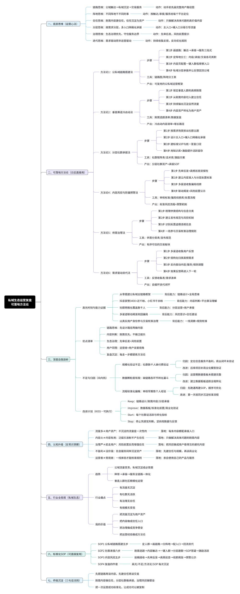
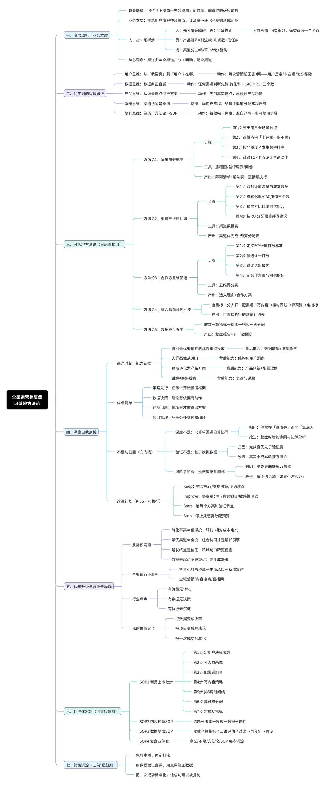
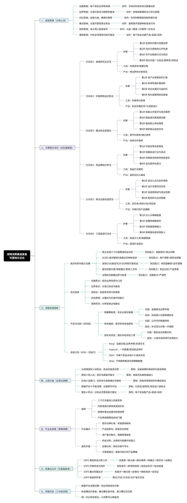
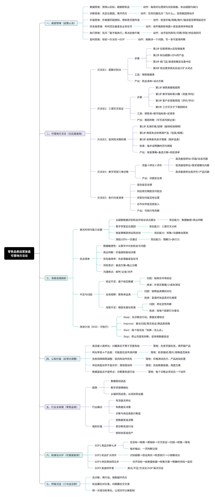
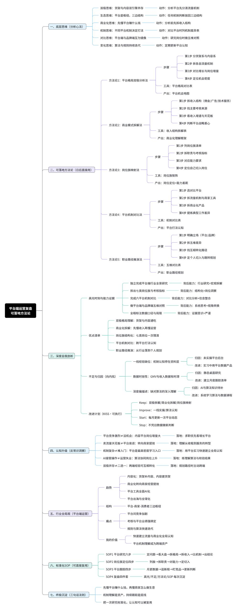
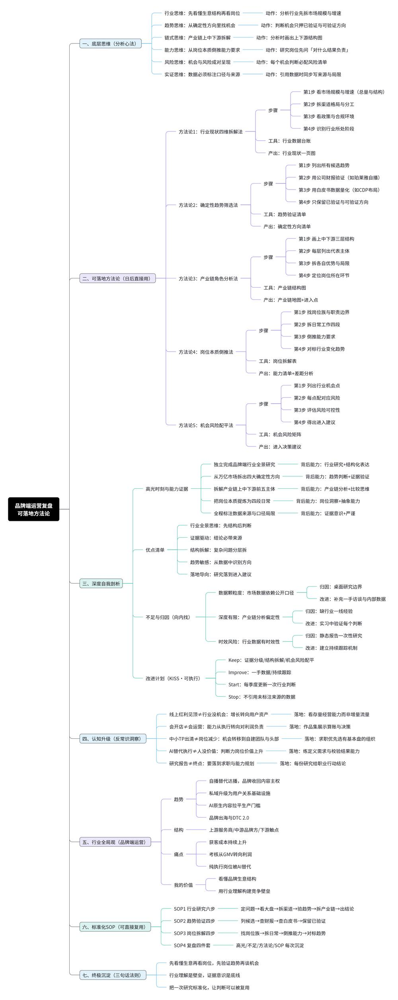

🌞
孙习冉
18 岁 · 求职方向：运营
到岗节奏可立刻入职 · 一周到岗 5 天及以上
实习周期6 个月及以上 · 长期稳定
职业态度热爱运营 · 兴趣浓厚 · 愿意深耕
软性素质抗压能力强 · 可接受加班 · 可立刻上手 · 可多线推进 · 数据敏感 · 逻辑清晰 · 善于团队沟通协作 · 善复盘总结 · 积极乐观 · 责任心强 · 执行力强
邮箱
sun.xiran@foxmail.com
⭐ 六个项目
📊成果速览
📁
6
个项目
👥
2,667
社群覆盖
📝
2万+
研究输出
🧭我总结的方法论
从 6 张复盘导图里提炼的共性范式——项目会变，这套思考方式不变。
复盘七步 · 我的统一思考范式
5 个运营项目按七步范式复盘，作品集工作台也用「痛点—行动—结果」同一套口径搭起来——项目会变，这套思考方式不变。
底层思维→可复用方法论→深度复盘→
认知升级→行业底层→标准化 SOP→持续沉淀
赛道三段式：触点 — 承接 — 交易
做任何一个垂直赛道，先分清楚三件事各由谁承担：公域负责触达与增长，私域负责答疑与关系资产沉淀，交易板块负责服务与流转。阵地不分清楚，矩阵内部就会流量内耗。
公域内容触达→私域分层承接→交易与服务
低摩擦承接：内容资产 → 用户资产
内容不仅要有触达量，账号侧必须配置承接入口。用刚需内容建立信任，再把信任一键转成私域用户，流量才不会漏。
刚需内容→建立信任→一键入群→分层沉淀
渠道效率测算：不平均用力
预算永远不够，所以要横向测算 ROI / CAC / 转化率，找出值得加码的那几个，并识别「高转化但贵」的渠道该换目标而不是砍掉。
人群画像→渠道匹配→ROI/CAC 测算→预算重分配
风控前置：识别 — 揭发 — 预警 — 处置
只审核不揭发、只发布不预警，等于放任风险。把风控从事后删帖前移到事前提醒，信任是省出来的。
线索收集→多渠道联动揭发→风险预警→标准化处置
需求驱动而非运营驱动
服务方向不能凭主观判断。持续从公域咨询、私域反馈、审核巡查中收集高频问题与信息盲区，结构化归类后反向优化内容、服务口径与板块规则。
需求收集→归类分析→策略调整→效果反馈
🖼️ 6 张复盘导图 · 点开可放大






每张导图都按同一套七步范式复盘，对应上面各自的项目。
🌱成长轨迹
2020
对运营产生浓厚兴趣，开始自主学习
自发研究电商与内容运营案例，零碎接触校园项目，建立「流量—转化—留存」的基础认知。
2026.06
启动行业与赛道研究
从零开始写行业分析报告，练的是「把散点信息整理成别人能直接用的判断」。
2026.08
校园私域生态运营启动
作为 5 人团队核心成员，搭起「公域触达 → 私域沉淀 → 交易服务」全链路，第一次对真实增长结果负责。
2026.09–10.10
FORAGE · Omnichannel Marketing全渠道营销
独立完成 4 项任务、6 份交付物，跑通人群—渠道—排期—复盘的完整链路，测验 90%。
2026.10
品牌端行业分析 + 抖音猫咪赛道商业化
从「看行业」推进到「能给出可执行建议」，一手样本挖掘成为研究方法上的转折点。
2026.10.20
FORAGE · Associate Merchant (Walmart)沃尔玛副商人
测验满分 100%，完成零售选品、定价判断与向上建议。
2026.11
三份报告收官
平台端、品牌端行业分析与猫咪赛道商业化分析定稿，合计约 2 万字。
💎我的优势
精通 · 品类与商品运营Assortment
能从销售数据里挑出该加码的商品并落到定价与货架动作上：沃尔玛 Associate Merchant 用三问框架验证后建议加码 Trail Mix —— 校园店 +64%、城市店 +50%，定价 $4.19 比全国品牌 $5.49 低约 24%；为滞销品出 3 套恢复方案并标明各自代价 · 测验 100%
擅长 · 流量转化与大促推进Traffic & Campaign
能把「钱该投哪个渠道」算清楚、也能独立推完一场活动：8 渠道 × 3 指标横向测算排序锁定 TikTok 为最优渠道，ROI 233%、CAC $8.82（全渠道均值 $15.70 的 56%）建议加码；线下 CAC 最贵 $19.74 建议转做体验 · 7 类人群 × 12 渠道 × 6 类物料 × 5 周排期全程独立完成
熟稔 · 赛道研判与市场测算Market Sizing
陌生赛道能在两周内拆到「能不能进、怎么定价」这一层：抖音平价猫咪赛道商业化分析 · 7,682 字 · 200+ 条一手评价 + 30+ 起投诉样本 · 14 个信源 → 收敛出 3 条落地路径与主推 29.9 元 / 引流 15.9 元价格组合
深谙 · 产业链与竞争格局拆解Industry Chain
能看清一个行业谁在赚钱、钱往哪流，并把结论做成可复用框架：平台端 × 品牌端 2 份行业报告合计 1.24 万字 · 5 维对照表 · 得出「平台看机制、品牌看利润，两套经验可互译」
精于 · 商业化路径设计Monetization
不停在「写一份报告」，而是把研究结论推到可执行的商业路径：猫咪赛道从痛点直接推到 3 条商业化路径 + 主推 29.9 / 引流 15.9 价格组合 + 内容与渠道分工，并写明结论前提与失效边界
长于 · 商务沟通与结构化交付Biz Writing
向上汇报给的是建议不是数据表，交付物可直接用于汇报与执行：3 份研究报告约 2 万字 · 12 / 13 页作品集 deck 各一份 · 8 渠道数据分析表 · 英文商务邮件向上建议加码 · 4:38 提案讲解视频 · 测验 100%
善用 · 用户洞察与机制设计User Insight
能把社群从通知渠道做成可沉淀的用户资产、用规则代替人肉维护：2,667 人分层社群矩阵（新生 869 / 新生二群 500 / 答疑 485 / 研究生 447 / 口碑榜 366）· 高频问题知识库与统一答复口径等组成标准服务 SOP · 需求反哺口碑榜单与避坑指引持续迭代 · 公域 3,400+ 获赞、70+ 作品
洞悉 · 平台规则与风控治理Risk Control
把风控从事后删帖前移到事前预警、用标准流程替代经验判断：三级机制（先审后发 + 分层处置 + 风险预警）· 破解 4 类难题（冷启动 / 内容审核 / 交易治理 / 欺诈识别）· 联动揭发兼职刷单、虚假交易、代拿代办、冒充身份等骗局并公示
长于 · 沟通表达与团队协作Teamwork
能在多方之间把话说清楚、把事推下去：5 人团队核心成员，与队友分工推进 4 个执行环节 · 跨 4 个平台（抖音 / 小红书 / 微信 / QQ）联动、统一口径揭发多类骗局 · 面向客户提案（4:38 讲解视频）· 用英文商务邮件向上汇报建议
能扛 · 抗压与高强度交付Resilience
多线程并行推进也不掉链子、适应快节奏与加班大促强度：5 个月内并行推进 5 个项目（含 3 份行业研究），累计独立产出约 2 万字研究与 15 份交付物 · 两项高难度岗位模拟测验 90% / 100%
过硬 · 责任心与执行力Execution
接到的活有始有终、交付前自己先把关：校园项目自 2026.08 持续运营至今、2,667 人矩阵长期维护不断档 · 200+ 条一手评价逐条人工归类、30+ 起投诉逐个定位 · 恢复方案均标明代价与适用边界，不交没验证过的结论
善做 · 复盘总结与 SOP 沉淀Retrospective
习惯把一次性动作沉淀成可复用流程：8 渠道复盘 → 输出预算重分配建议（加码 TikTok、线下转体验）· 校园项目沉淀标准服务 SOP + 三级风控机制 · 3 份研究报告全部写明结论前提与失效边界 · 留下 6 张复盘导图（见「我总结的方法论」）
🛠️技能与工具
精通
★ 核心能力
选品与定价决策基于销售数据横向对比识别值得加码的商品，用「卖得好吗 / 为什么 / 加多少」三问框架做结论压力测试，再扫描竞品价格带定锚点、用毛利与周转双约束反推价格档；曾为沃尔玛 Trail Mix 给出加码建议，带来校园店 +64%、城市店 +50% 增长，定价 $4.19 较全国品牌低约 24%，并落到货架陈列与补货动作。
赛道研究与市场测算陌生赛道按「规模 → 价格带 → 竞品 → 用户声音」四层逐层下钻，两周内收敛切入方向与定价锚点；用 TAM / SAM / SOM 三级框算与增速、集中度双指标判断窗口期，调用 14 个信源与 200+ 条一手评价交叉验证，输出可执行的进入判断。
渠道策略与 ROI · CAC 测算建立统一 ROI / CAC / 转化率口径横向拉齐 8 个渠道，按边际效益排序锁定加码与收缩对象，把测算结论翻译成预算重分配动作；TikTok ROI 233%、CAC $8.82（全渠道均值 $15.70 的 56%）据此建议加码，线下高转化低效率识别为「体验」而非「转化」。
商业化路径设计把研究结论推到可执行的商业路径：设计定价组合（主推 / 引流）、产品结构（引流款 / 利润款 / 形象款）、内容与渠道分工，并写明结论成立的前提与失效边界；猫咪赛道收敛出 3 条商业化路径与主推 29.9 / 引流 15.9 价格带。
用户分层与 SOP 机制设计按需求场景与身份分层承接，用机制替代人肉维护：搭建 2,667 人分层社群矩阵，沉淀标准服务 SOP 与「先审后发 + 分层处置 + 事前预警」三级风控，把一线经验固化为可复用流程。
精通运营硬技能 · 16 项
数据清洗与建模擅长多源数据去重、标准化与异常值处理，用 Power Query 与复杂嵌套函数搭建可复用的清洗流水线，建动态数据透视与参数化看板实现业务数据可视化追踪，把分散表格汇成一眼看懂的业务视图，处理万级数据并支撑周期性复盘。
转化漏斗拆解全链路漏斗（曝光 → 点击 → 咨询 → 下单 → 复购）逐层拆解，定位转化漏点与流失环节，结合渠道归因判断预算该花在哪一步最有效，用 A/B 与漏斗对照输出可落地的优化动作而非仅给图表。
客单价与连带率分析客单、件单与连带率多维拆解，识别高连带品类组合与凑单机会，配套满减、搭售与组合定价策略，用价格带与货架动线配合提升连带，把「客单低」拆成可执行的品类动作。
商品卖点与转化文案从用户痛点反推卖点，用 FAB 结构撰写高转化详情页与投放文案，先解决顾虑再讲卖点，用评论高频词校准文案钩子并以 A/B 测试持续迭代，让文案直接对转化负责。
竞品与赛道拆解竞品价格带、卖点、渠道与评价四维拆解，识别进入机会与差异化空间，输出竞争地图与打法建议，并用一手用户声音验证差异化是否成立，避免自嗨式定位。
市场规模测算用 TAM / SAM / SOM 三级框算与自上而下、自下而上双向校验，结合增速与集中度判断窗口期，把「市场大不大」落到可决策的数字，支撑赛道进入与资源分配判断。
定价与毛利测算从成本结构、平台扣点与物流反推底价，扫描竞品价格带定锚点，用毛利与周转双约束定档，平衡走量与服务商利润，输出既打得赢又能赚钱的价格方案。
商品结构规划按引流款、利润款、形象款做货架与价格带组合设计，用动销与毛利双轴排结构，结合生命周期与季节性调整，并以齐架率、缺货率校准，让货架始终为转化服务。
活动策划与大促节奏从目标拆解到排期推进再到复盘，独立推完 7 类人群 × 12 渠道 × 6 类物料 × 5 周排期，把控预热、爆发与返场节奏，配套资源分配与风险预案，用数据复盘驱动下一轮迭代。
一手用户洞察（VOC）挖掘 200+ 条真实评价与 30+ 起投诉逐条编码归类，用质化分析提炼痛点与机会，把「用户原话」翻译成可指导产品与运营的量化结论。
用户旅程设计搭建公域触达 → 私域承接 → 交易转化全链路，用「触点—承接—交易」三段式做阵地分工，降低从看到到下单的摩擦，以漏斗与流失点持续校准每一步体验。
需求收集与优先级从公域咨询、私域反馈与审核巡查中结构化收集需求，用影响面 × 紧急度 × 成本三维排序（RICE / 价值—成本矩阵）定优先级，驱动内容与服务持续迭代。
行业研究报告撰写结构化交付可直接用于汇报：结论先行、证据后置、写明前提与边界，目录、图表与五维对照表标准化，二手数据经交叉验证后引用，让报告经得起追问。
数据看板与周报把分散数据汇成可一眼看懂的业务视图，用自动化刷新减少手工、以异常预警提示波动，配套叙事化周报降低阅读门槛，支撑周期性复盘与管理决策。
商务沟通与提案向上给可采纳建议而非数据堆砌，用金字塔结构表达（结论—论据—动作），会前对齐目标、会后跟进行动；面向客户做过 4:38 提案讲解视频，把方案讲成客户愿意买单的故事。
英文商务写作英文邮件与提案表达专业清晰，用 data-backed 句式向上汇报加码建议并获采纳；中英双语文档无歧义，FORAGE 测验满分 100%，能直接在跨国团队里用英文推进工作。
熟练
办公与效率工具 · 10 项
Excel / WPS 表格熟练用 Power Query 做多表合并与 ETL 清洗，INDEX / MATCH / SUMIFS 等复杂嵌套函数与动态数组（spill）建模，透视表 + 切片器搭交互看板，条件格式与图表做仪表盘，宏录制半自动化重复动作，处理万级数据并沉淀可复用的测算模板。
Word / WPS 文字长文档用样式与多级标题体系管理结构，自动目录、题注与交叉引用保证跳转准确，页眉页脚与分节编排统一版式，表格图文混排，多份报告套同一模板保持视觉一致，成品可直接用于汇报与交付。
PowerPoint / WPS 演示用金字塔逻辑搭 deck 结构，母版与版式统一视觉语言，把控图文配比与信息层级，数据图表可视化呈现，12–13 页作品集级呈现，配套演讲备注与转场设计，让汇报既专业又有记忆点。
剪映 视频剪辑口播脚本分镜与节奏剪辑，字幕、花字与转场包装，画外音与 BGM 配比，关键数据用动效高亮，独立完成 4:38 客户提案讲解视频的剪辑与包装，把方案讲成看得懂的故事。
思维导图 XMind / 幕布用中心辐射结构拆解复杂问题，把复盘七步、赛道三段式等范式落成导图，将报告逻辑骨架可视化，沉淀 6 张可复用的分析导图，作为思考与汇报的共用语言。
腾讯文档 / 飞书多人实时协同编辑与权限分级，评论与 @ 跟进任务，模板库与知识库搭建，版本历史与变更可追溯，支撑团队实时共创与资料沉淀。
企业微信 / 钉钉社群分层入群与自动欢迎，标签与 SOP 快捷回复统一答复口径，内部审批与待办协同，用机器人降低重复操作，让社群运营与跨部门协作都跑在标准化流程上。
问卷星 / 金数据问卷逻辑跳题与配额控制，多渠道投放与回收，数据看板与交叉分析，NPS / 满意度追踪，支撑一手样本收集与效果度量。
Canva / 稿定设计套用品牌色与字体规范，海报、封面、九宫格与信息图模板化产出，批量出图与多尺寸自适应，用组件库保证多平台物料视觉统一。
Photoshop 基础图层、蒙版与抠图精修，尺寸与导出格式适配多端，批处理与动作增效，满足日常运营配图与活动物料导出需求。
🏅证书与核验
🏅
FORAGE · Omnichannel Marketing
核验码 6abb1a09 · 测验 90%
🏅
FORAGE · Associate Merchant (Walmart)
核验码 6aca16ff · 测验 100%
两张证书均可在 FORAGE 官网凭核验码查询。
孙习冉 · 运营 · 上海 · 可立刻入职 · 一周到岗 5 天及以上 · 可实习 6 个月以上